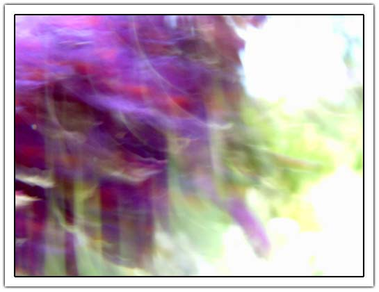
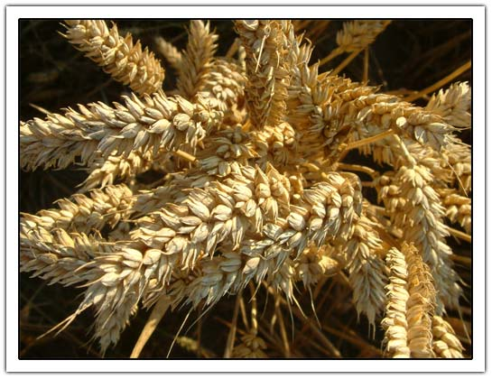
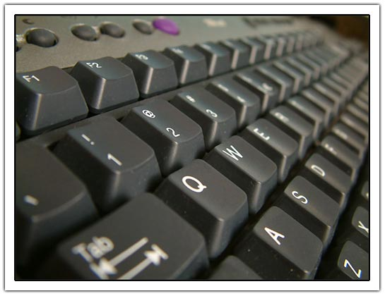
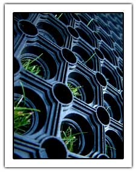
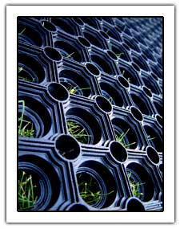
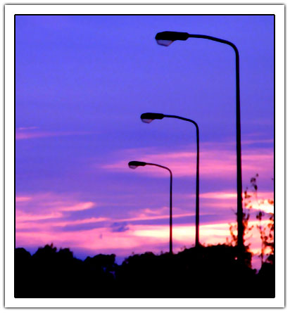
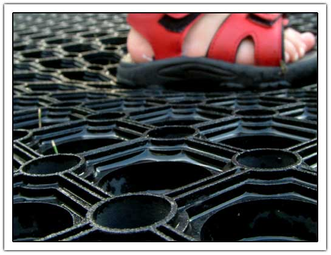

Repetition 2 - Reloaded
I just entered my final photo to the fuji mugs challenge. Tomorrow I have to bring the camera back which I borrowed from another contester. I took about 50 snapshots. And this is one of them:

8th: I had a look today at the other contestants and I guess my rank won;t be too high. Even think it will be in the last 30 :( See my other images
In total a had around 50 shots taken. Some were worthless but below are the compositions I though about before I took the shot.
First I took a few shots around the house like leaves, flowers and grapes but these didn’t catch me. Then I saw the rubber mat, put it on the grass and made it wet. I took some shots at f11 but most were blurry and the reflection of the water put overexposed parts in the image. Then I went for some corn shots. These are 2 minutes walk from my house and saw them every morning when I went to work (and thinking: I need to take some shots before its gone). Around seven in the evening the sun is really great and the corn shows up almost in gold. The picture is not modified in any way; I even did not crop it! I did not submit it as I thought the thumbnail of the image would not encourage people to look at the picture as its a bit messy.

I decided to upload everything to the computer to have a look at and submitted corn (above) as a first starter. Then I saw my keyboard and took two shots. It was amazing how much dust it is cllecting and had to apply some filters to remove the dust. Colors were fine and left that is it was.

As the rubber mat turned to be very disapointing I took another set around nine in the evening. Most of the water had disapeared and maybe the light was also better at that time so the 3 pictures I took were all fine and the difficult part was now choosing the right one! At first I was not too happy abou the grass popping out of the mat but in the end I thing that gave it a little twist and made it a bit better. Below are the other two shots (rotated 90 degrees clockwise so they take up a little less space). Both are uncropped but had levels and curves adjustments to remove a bit of blue haze and get the black a bit more black:

After the mat a walked again to the corn field to see if I could get some shots form the lanterns outside. Unfortunately the were off but the sky was not bad. I took a few shots but was not too happy with the end results as there were too many disturbing trees around it. Although now I’m finishing this blog I did some more dramatic changes in the tone and got something nice out of it. I applied the following:
- Auto levels, this changed the blue/brownish sky to purple/orange
- Curves to make the black better, removes some details in the trees and makes the sky more purple.
- This last ‘correction’ revealed a lot of the noise in the image and reduced noise in the image by blending the brightness of pixels (median filter).

On the second day (that I had the camera) I tried to redo the rubber mat but couldn’t make it any better. Althoug then my little daughter was walking on the mat I found some ways to make the composition a bit more interesting by having one of her feet on the mat. It didn’t workout. She is just 18 month old and is not running for photomodel…

Well I must say I enjoyed my first callenge and hope I can lend the camera again!
Comments
Post a comment
XHTML, CSS, RSS feeds. Powered by Movable Type. Hosted @Home with a domain by hostway.
Use the form below to add your relevant comments, suggestions. Be aware that I reserve the right to edit any raw language, abusive and/or inappropriate comments that's too far off topic or remove it all together.